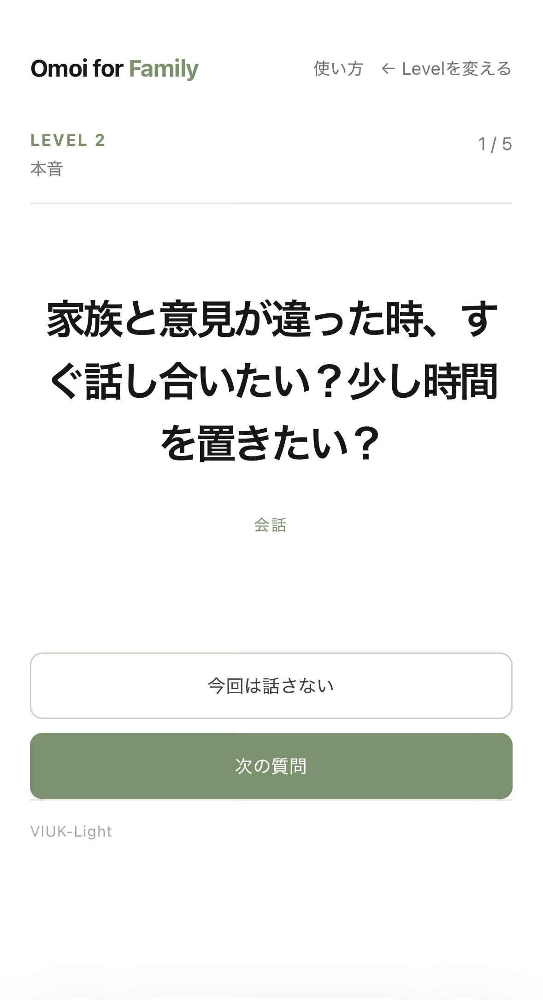
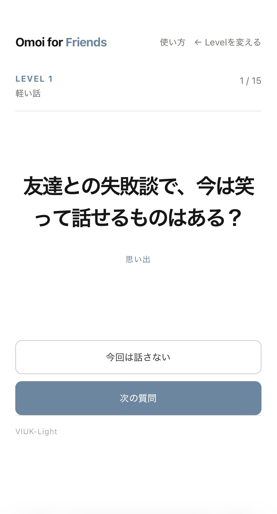

シリーズ一覧
| Omoi for Couples | 恋人・パートナーと、距離感・愛情・これからについて話す |
|---|---|
| Omoi for Family | 家族と、日常・価値観・支え合い・これからについて話す |
| Omoi for Friends | 友だちと、思い出・距離感・価値観・これからについて話す |



単体URLで開ける
3シリーズはそれぞれのディレクトリを持っています。ハブの「シリーズを選ぶ」を使わなくても、単体URLから直接選択画面に入れます。会話の相手に合わせてURLを共有したいときに使えます。
質問データの特色
| Couples | 日常、恋愛、距離感、不安、愛情、将来、境界線など |
|---|---|
| Family | 日常、会話、価値観、思い出、支え合い、これから、距離感 |
| Friends | 日常、会話、価値観、思い出、支え合い、これから、距離感 |
カテゴリは質問を整理するための表示名です。カテゴリ名だけで質問の深さや答えの方向を決めるものではありません。
相手に合わせた選び方
01
恋人と話したい
Couplesを選び、日常の軽い話から距離感や将来の話へ進めます。
02
家族と話したい
Familyを選び、家族の記憶や価値観を聞き直す入口にします。
03
友だちと話したい
Friendsを選び、思い出や普段は話さない考えを開きます。